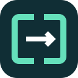
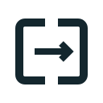
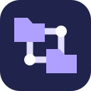

01 / VERBINDINGDirspanTwee bestandsvensters, één verbinding. Kort en technisch, met de nadruk op navigeren en verplaatsen.24 / 40 / 56 px · monochroomDirspanBestandenSVGMonochroom
02 / SAMENHANGFoldmeshMappen die met elkaar verbonden zijn. Een uitgesproken technisch beeld dat past bij een eigen server.24 / 40 / 56 px · monochroomFoldmeshBestandenSVGMonochroom
03 / BALANSFoldaxisTwee mapvlakken rond een centrale as. Symmetrisch en rustig, met een duidelijke verwijzing naar de dubbele weergave.24 / 40 / 56 px · monochroomFoldaxisBestandenSVGMonochroom